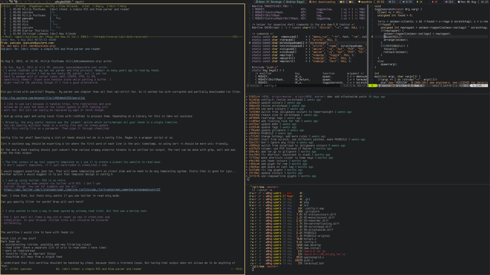

some thoughts on minimalism
I want this page to mostly be tutorials but I figure it's as good a place as any to talk about minimalism. This is a centeral construct in a lot of UNIX user's lives.
dwm for example, probably my favorite tiling window manager is centered around minimalism in all aspects. A minimal interface, minimal system resource usage, minimal code. A lot of people ask why do UNIX users like this shit?
To preface all this, I mean this to be about people moving from current popular operating systems to a computer that's ment to be minimal from top to bottom (OS to hardware)
To me context and use cases are really important to answer this. Nerds of old who had to deal with bloated terribly coded crap-machines certainly noticed the difference when UNIX became more and more popular. However people in my generation who have grown up with fairly decent working operating systems don't have that context. The baseline operating system they comapre it to is fine- or at least it works for what most of them need it to.
So why are we all subjecting ourselves to these minimal interfaces; editing config files and searching through man pages so that we can correctly use awk?
There are a lot of arguments. Some people like to talk about a kind of zen buddh-ish methodology that they have with their computers that makes them compelled to only use MUTT as their mail client. Some people say that it improves their workflow. Certainly configurability is huge in this nature. Being able to use a computer with just the keyboard is fucking awesome. But is that really enough to move a current Windows power user over. Certainly not.
I think, at least to me, its more about having fun and trying to learn somthing new. I remember I briefly sang the praises of a fixed gear bicycle. I really fell into the line of thought where my bike was better than everyone elses because it was stripped down and minimal. It suited what I needed it to do almost perfectly and when it broke I could fix it becuase there was no complicated system (tuning gears) to work with. The more I fell out of that world though the more I realized that no one thing can work for everybody. No single computer, no single bike type.
It's about having fun- just do what you like and tell everyone else to fuck off.